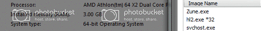

Does anyone know how to run Half-Life 2 in 32bit mode on Windows 7 64bit, I don’t want to run the 64bit version because it’s glitchy.
It runs 32 bit automatically. 64-bit is opt-in.
Really, so even if I install it under Win7 64bit it will still use 32bit? I thought you had to use a parameter in the HL2 shortcut.
I’m pretty sure 64 bit is default for 64 bit systems. Just put -32bit in the launch options (properties->set launch options)
I have no problem with HL2 64 bit…what glitches do you have?
I haven’t installed it yet, but I remember from the reviews that the 64bit version of HL2/LC got, that it had many graphical glitches. Even under Vista 64bit, many people experienced glitches or even crashes.
I just want to make sure I’ve got a stable version 
I’m pretty sure that most people had no issues, a few people had upside down fences or something.
I use a 64 bit os, and half life 2 is 32 bit…
Their use to be a opt in 64 bit version, but it no longer exists to my recollection.
Really? If you go back to the reviews from 2005 you’ll find that most had some glitches. And if you Google Half-Life 2 64bit you get a ton of people with problems on Vista 64bit.
I’m sure it doesn’t affect everyone, but even so it doesn’t have any real benefit. HL2 64bit simply wasn’t very well made.
I’ll try your tip and use -32bit in the shortcut, that’s with a space I assume?
Well, I don’t imagine that the people who had no problems whatsoever bothered complaining about it. :rolleyes:
Just put “-32bit” (no space) into the options.
Okay thanks 
I had issues, nodegraphs out of date and unresponsive NPCs, a ton of stuff.
Anyway, like everyones said, add -32bit and it’s all good, works perfectly
.
HL2 under Win7 65bit works fine for me, without typing anything in the launcher
You have installed Steam under the Program File(x86) folder have you?
Last time I checked, they removed the 64-bit version, and now it runs in 32-bit for everyone. I noticed this months ago and sent an inquiry to Steam support about it and they said that the 64-bit mode has been removed. Which sucked because my saves were incompatible with the 32-bit version, and I was replaying HL2 at the time.
64 bit OS’s can run 32 bit apps, they aren’t restricted to just 64 bit. It only drops support for 16 bit programs (IIRC).
Lol - are you still living in 2005? Join the rest of us in 2010. HL2 works just fine on Win 7. Any problems from 5 years ago have long since been addressed. TBH it’s always worked fine for most people anyway, right from its release.
Yeah, Half-Life 2 works great on my computer, no graphical-or otherwise- glitches to be seen here.

Default install, no launch options.
I haven’t installed HL2 on a 64bit system in over a year, but when I did, I was assured the 32bit installs by default, however I wasn’t even able to get past the menu unless I put the -32bit in the launch options.
Vista had wicked-bad support for video drivers (very sensitive issue in FPS games) and on top of that, the 32-bit emulator had its shortcomings. Even WinXP x86-64 had a better 32-bit kernel than Vista, but that’s all behind us now.
Win7 x86-64 (been running RC build 7100 since last April) has been running like a champ. The drivers were a bit flaky at the start, but soon after the RC was released, nVidia came to the rescue with some quick builds. It hasn’t given me any serious problems.